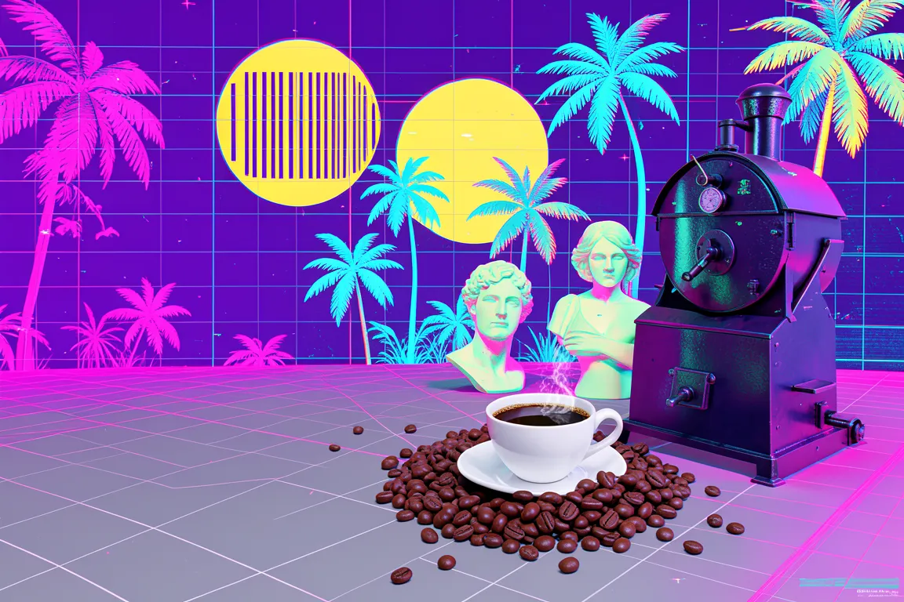

nett · 2012–2016 · også: Vapourwave, Aesthetic, A E S T H E T I C
Rosa og cyan gradienter, greske byster, palmer, japansk tekst, skrivebordsvinduer fra 1990-tallet og et solnedgangsrutenett. Det kom fra nettbaserte musikkmiljøer rundt 2011 og ser på forbrukerdrømmene fra 1980- og 1990-tallet med ironi.

Kjerneidé
Nostalgi for en framtid som ikke ble noe av: bruk den døde glansen fra bedriftskulturen på 1990-tallet for å stille spørsmål ved den.
Designprinsipper
Sett en gradient fra magenta (#FF71CE) via fiolett til cyan (#01CDFE) i 135° over heroen.
Tegn et gulv av perspektivrutenett med linjer på 2px i cyan eller rosa med en horisont på 55 % til 65 % av visningsvinduets høyde.
Plasser en klassisk statue, en palme eller en solskive med vannrette kuttlinjer (6 til 8 stolper) som hovedbilde.
Vis innhold i retro skrivebordsvinduer: kant med avfasing på 2px, en tittellinje på 24px og 3 firkantede knapper.
Sett overskrifter i versal med vid sporing (+0,3em) og legg til en linje med japansk katakana på 50 % av størrelsen.
Bruk en mørk lilla bunn (#2A1B5C) til tekstområder og hold brødteksten på 16px med kontrast på 7:1 eller mer.
Legg til et skannelinjelag med striper på 2px ved 6 % dekning og en glød på 8px til 16px på neontekst.
Antimønstre
Nøytrale flate paletter uten neon
Ren bedrifts-sans-serif i brødteksten
Foto av virkelige, moderne mennesker i daglig bruk